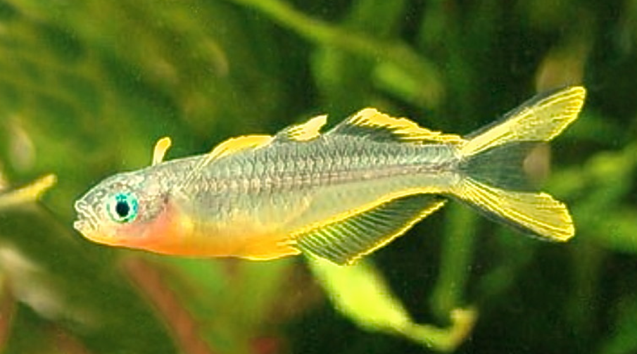
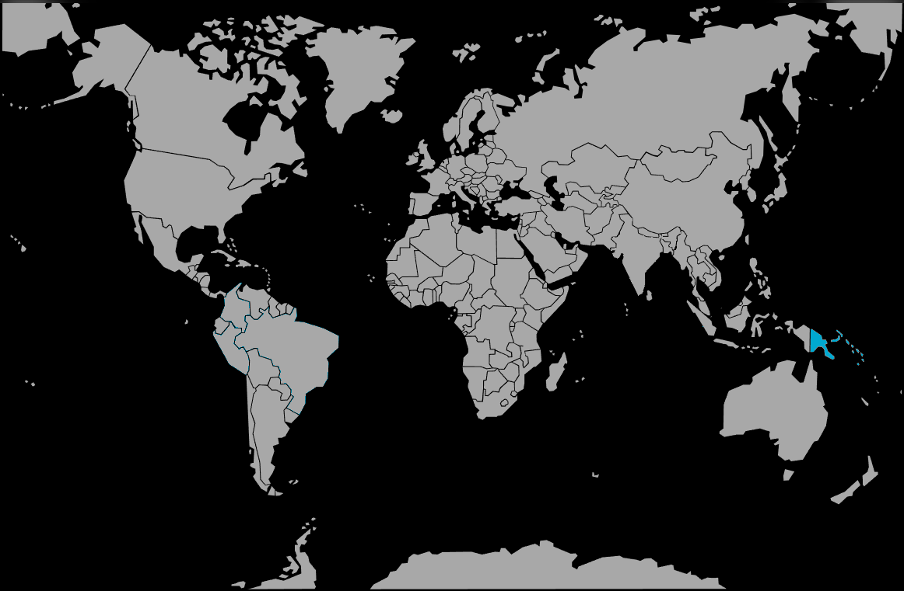

Systématique
- Ordre : Atheriniformes
- Famille : Pseudomugilidae
- Genre : Pseudomugil
- Espèce : P. furcatus

Pseudomugil furcatus est une petite espèce de poisson arc-en-ciel originaire de Papouasie-Nouvelle-Guinée. Décrit par Nichols en 1955, il appartient à la famille des Pseudomugilidae. Ce poisson est particulièrement apprécié pour son allure dynamique et ses nageoires pectorales positionnées haut sur le corps, qu'il agite constamment à la manière d'ailes.
Il atteint une taille modeste de 5 à 6 cm. Son corps est fusiforme, presque translucide avec des reflets bleu-vert argentés. La caractéristique la plus frappante réside dans ses nageoires : les deux dorsales et l'anale sont bordées de jaune vif, tandis que la nageoire caudale est profondément fourchue (d'où son nom furcatus) avec des lobes jaune citron marqués de bandes noires. Ses yeux sont d'un bleu intense et lumineux.
Cette espèce est très active et vit en bancs. Contrairement à d'autres membres du genre, elle préfère les eaux claires et bien oxygénées plutôt que les marécages stagnants. Sa morphologie est adaptée à une nage rapide en plein eau.
Pseudomugil furcatus est un poisson grégaire, vif et pacifique. Il doit impérativement être maintenu en groupe (minimum 8 à 10 individus) pour que les interactions sociales s'expriment. Les mâles passent une grande partie de la journée à parader les uns devant les autres, nageoires grandes déployées, pour établir une hiérarchie sans agressivité réelle.
C'est un excellent nageur qui occupe principalement la partie supérieure et médiane de l'aquarium. Il apprécie un espace de nage dégagé au centre, tout en ayant besoin de zones plantées sur les côtés pour se reposer. Très sociable, il peut cohabiter avec d'autres espèces paisibles de taille similaire, mais son hyperactivité peut stresser des poissons trop calmes comme certains Gouramis nains.
Mode : Ovipare, diffuseur d'œufs sur substrat (mousse ou plantes à fines feuilles).
La reproduction est continue en aquarium si la température est maintenue vers 25-26°C. Le mâle attire la femelle vers un support de ponte (mousse de Java, mop) par des parades vigoureuses. La femelle dépose quelques œufs chaque jour sur plusieurs jours. Les œufs sont adhésifs et assez gros pour la taille du poisson.
L'incubation dure environ 12 à 15 jours selon la température. Les parents ne s'occupent pas de leur progéniture et peuvent dévorer les œufs ou les alevins s'ils les trouvent. Les alevins sont capables de manger des nauplies d'artémias ou des micro-vers dès la nage libre, mais leur croissance est relativement lente durant les premières semaines.
Dimorphisme sexuel : Le mâle est plus coloré, avec des nageoires plus longues et des liserés jaunes plus larges et intenses. La femelle est plus terne, souvent plus petite, avec des nageoires plus courtes et moins colorées. À maturité, le corps du mâle est également plus haut.
Espérance de vie : 2 à 3 ans. Comme beaucoup de petits Pseudomugilidae, c'est une espèce à cycle de vie court.
L'espèce est endémique de la province d'Oro (baie de Dyke Ackland et baie de Collingwood) dans l'est de la Papouasie-Nouvelle-Guinée. Elle fréquente les ruisseaux de plaine à l'eau claire et à débit modéré, ainsi que les zones de forêt tropicale humide.
Le substrat est généralement composé de sable, de gravier et de feuilles mortes, avec une végétation aquatique dense par endroits. Contrairement à de nombreux poissons de cette région, il ne vit pas dans des eaux très douces ou acides, mais préfère des eaux neutres à alcalines et modérément dures.
Répartition

Origine naturelle :
- Océanie : Est de la Papouasie-Nouvelle-Guinée (endémique).
- Localisation : Bassins versants des rivières entre la baie de Dyke Ackland et la baie de Collingwood.
- Altitude : Généralement dans les zones de basse altitude (plaines).
Bien que sa zone de répartition soit restreinte, l'espèce est largement élevée commercialement, ce qui réduit la pression sur les populations sauvages.
Paramètres de maintenance
Température : 24 à 28 °C (25 °C idéal).
pH : 7,0 à 8,0 (préfère les eaux légèrement basiques).
GH : 10 à 20 °dGH (eau moyennement dure à dure).
Courant : Modéré ; apprécie une eau bien brassée et parfaitement oxygénée.
Volume conseillé : Minimum 60-80 litres pour un banc de 8 individus. Bac tout en longueur recommandé pour favoriser la nage.
Régime alimentaire
Régime : Omnivore à dominante carnivore (insectivore).
En aquarium, il accepte tout type de nourriture de petite taille adaptée à sa bouche supère : paillettes broyées, micro-granulés.
Un apport régulier en proies vivantes ou congelées (daphnies, artémias, cyclops) est indispensable pour maintenir sa vitalité et l'intensité de ses couleurs jaunes.